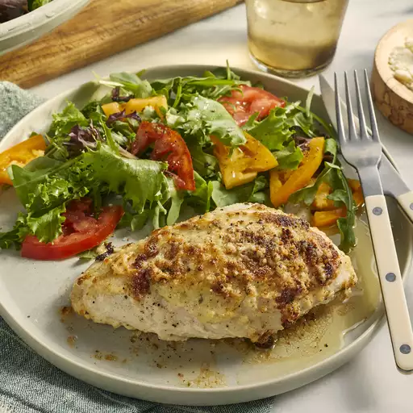

Mayo Chicken

Description
This mayo chicken is the perfect dish for those days (or nights) where you want a quick but nutritious meal.
Ingredients
- 1 whole chicken, cut into 6 pcs
- 1 cup mayonnaise
- 2 cloves garlic, crushed
- 1 tbsp finely chopped rosemary
- 1 tsp salt
- Ground black pepper to taste
- 1/2 cup grated parmesan cheese
Steps
- Preheat the oven to 350 degrees F (175 degrees C).
- Place chicken pieces into a 9x13-inch baking dish. Stir together mayonnaise, garlic, rosemary, salt, and black pepper in a bowl. Spread mayonnaise mixture over chicken; top with Parmesan cheese.
- Bake in the preheated oven until no longer pink in the center and the juices run clear, about 1 hour and 10 minutes. An instant-read thermometer inserted into the center should read at least 165 degrees F (74 degrees C).
With that, the chicken is ready! We recommend serving with a side of green leafy vegetables or a salad.
Return to the homepage